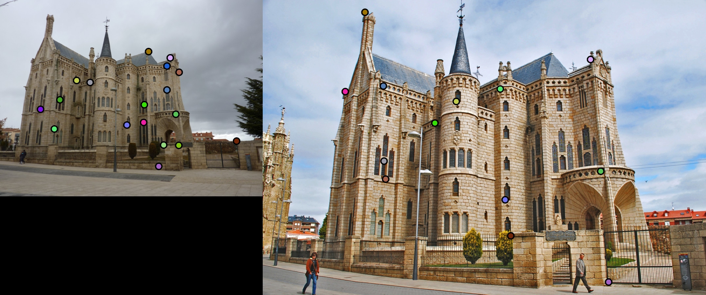

Project 2: Local Feature Matching
Project 2 focused upon feature matching between given images. Going into the project, one of my largest skepticisms for feature matching was the degree to which images could be taken from different angles. Although our fundamental approach more than validates the concept, it is incredible to see the work done to accomadate pictures taken from notable different perspectives.
Intro
I looked forward to using the sift filter, something which frankly I attribute with the most generalized yet reliable approaches to feature categorizing. It consistently increased my matching success rate by twofold when switching from the normalized patches After playing with my threshold for a while, I got significantly better results with gradually increasing my threshhold variable. Previously at a threshhold of 0.8, I was only seeing a high 60 percent accuracy on my matched features. After finally settling with 0.95, I improved my results across the three provided images. In the end, I was able to produce a 96% success rate with the photo of Notre Dame, correctly matching 87 out of 91 points. For the photo of Mount Rushmore, I was not able to generate nearly as many interest points to match, largely because of the limitations of our traditional harris corner detector. Nevertheless, out of the 28 points identified, I was still able to correctly match 50% of them. As expected, for the Episcopal Gaudi images, my Feature Matching algorithm was only able to identify 18 points overall, of which 5 were correctly matched resulting in a mere 28% match.
Tweaking params
The javascript in thehighlighting folder is configured to do syntax highlighting in code blocks such as the one below.
% code where i tweaked the threshold to .95 for optimal results
% 1 - (NN1/NN2)
dists = pdist2(features1, features2, 'euclidean');
[sortDistVal, sortDistInd] = sort(dists, 2);
% Ratio Test
ratioT = sortDistVal(:,1) ./ sortDistVal(:,2);
threshold = 0.95;
mask = ratioT < threshold;
confidences = 1 ./ ratioT(mask);
matches = zeros(size(confidences, 1), 2);
Results in a table

|


|
|  |